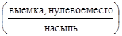
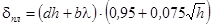
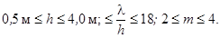

|
МИНИСТЕРСТВО |
МИНИСТЕРСТВО |
ВЕДОМСТВЕННЫЕ СТРОИТЕЛЬНЫЕ НОРМЫ
ПРОЕКТИРОВАНИЕ
ЗЕМЛЯНОГО ПОЛОТНА
ЖЕЛЕЗНЫХ ДОРОГ ИЗ ГЛИНИСТЫХ ГРУНТОВ
С ПРИМЕНЕНИЕМ ГЕОТЕКСТИЛЯ
ВСН 205-87
Минтрансстрой,
МПС
Москва 1988
Разработаны Всесоюзным ордена Октябрьской Революции научно-исследовательским институтом транспортного строительства (ЦНИИС) Министерства транспортного строительства СССР и Всесоюзным ордена Трудового Красного Знамени научно-исследовательским институтом железнодорожного транспорта (ВНИИЖТ) Министерства путей сообщения СССР при участии Главного технического управления Министерства транспортного строительства СССР и Главного технического управления Министерства путей сообщения СССР.
Авторы: кандидаты технических наук П.Г. Пешков, С.Г. Жорняк, Г.С. Переселенков, Е.А. Яковлева, Л.Н. Юдин (ЦНИИС), П.И. Дыдышко (ВНИИЖТ), инж. В.В. Соколов (ЦП МПС).
Внесены Всесоюзным ордена Октябрьской Революции научно-исследовательским институтом транспортного строительства министерства транспортного строительства СССР
Подготовлены к утверждению Главным техническим управлением Министерства транспортного строительства СССР и Главным техническим управлением министерства путей сообщения СССР
Согласованы Госстроем СССР № АЯ-4291-8 от 19.08.87
Настоящие Нормы разработаны в развитие СНиП "Железные дороги" в связи с усложняющимися условиями эксплуатации железных дорог:
повышением осевых нагрузок четырехосных вагонов до 27 г.;
использованием восьмиосных вагонов, увеличивающих нагрузку на путь до 10 т/м;
ростом грузонапряженности;
увеличением длины и веса, а также скоростей движения поездов;
переходом на механизированные способы текущего содержания;
увеличением дальностей возки дренирующих грунтов.
Нормы распространяются на проектирование земляного полотна новых железных дорог и вторых путей всех категорий, кроме особо грузонапряженных или строящихся в районах вечной мерзлоты.
При разработке норм в основу положены следующие эксплуатационные требования к земляному полотну из глинистых грунтов:
обеспечение необходимой прочности грунтов в зоне основной площадки под расчетной нагрузкой при разупрочнении грунтов под совместным действием поездной нагрузки и природных условий;
ограничение величины равномерного пучения с учетом свойств и состояния грунтов, а также глубины их промерзания;
ограничение интенсивности накопления остаточных деформаций земляного полотна.
Обеспечение эксплуатационных требований о учетом экономичности конструкций и рациональной технологии их возведения обусловило необходимость при сооружении земляного полотна из глинистых грунтом комплексного использования геотекстиля и защитных слоев из крупнообломочных (с максимальным размером фракций 300 мм) и песчаных грунтов (кроме пылеватых). Геотекстиль задерживает мелкие частицы грунта, обладает существенной механической прочностью в сочетания с эластичностью и способностью к удлинению, а также большой водопроницаемостью.
Прослойки материала могут выполнять функции обратного фильтра, армирующего, дренирующего и разделительного элементов.
Несущая способность глинистых грунтов под геотекстилем увеличивается, деформации от морозного пучения снижаются.
Конструкции земляного полотна разработаны с учетом отечественного и зарубежного опыта их применения при строительстве новых линий и усилении эксплуатируемых железных дорог.
|
Министерство
транспортного строительства СССР |
Ведомственные строительные нормы |
ВСН 205-87 |
|
Проектирование земляного полотна из глинистых грунтов с применением геотекстиля |
Минтрансстрой СССР |
|
|
Вновь |
1.2. Для усиления земляного полотна новых линий и вторых путей в зоне основной площадки предусматривается укладка геотекстиля на ее поверхность непосредственно под балластную призму или укладка геотекстиля на глинистые грунты с устройством защитного слоя над ним. Защитный слой не устраивается при грунтах с влажностью на границе текучести WL<0,23 или при глубине промерзания менее 1,0 м и толщине балластного материала под шпалой более 0,85 м. Толщина слоев балластной призмы назначается в соответствии со СНиП "Железные дороги" (как для земляного полотна из глинистых грунтов).
|
Внесены Всесоюзным ордена Октябрьской Революции научно-исследовательским институтом транспортного строительства Министерства транспортного строительства |
Утверждены |
Срок введения
в действие |
1.3. Конструктивные решения настоящих Норм предусматривают применение геотекстиля - нетканого синтетического материала, типа "Дорнит", выпускаемого по ТУ 21-29-81-81, и материала "Терфил" производства ВНР.
Без дополнительных обоснований разрешается применять другие материалы, если они изготовлены на основе долговечных полиэфирных и полипропиленовых волокон, устойчивых к воздействию природных факторов, (замачивание, промерзание, гниение, коррозия) и их разрывное усилие, Н/см, в направлении:
продольном.................................................................................. ³100;
поперечном.................................................................................. ³50.
Применение материалов, не отвечающих указанным требованиям, допускается при дополнительном технико-экономическом обосновании.
1.4. Конструкции земляного полотна с применением геотекстиля, в том числе конструкции укрепления откосов, приведенные в настоящих Нормах, разработана на основе типовых решений в соответствии с Альбомами Мосгипротранса, Ленгипротрансмоста и ЦНИИСа [1-4] и Методическими рекомендациями [5].
1.5. Требования настоящих Норм не распространяются на проектирование железнодорожных линий с грузонапряженностью нетто выше 80 млн.т-к/м на 10-й год эксплуатации.
1.6. Применение защитных слоев с геотекстилем на железных дорогах IV и V категорий, а также в районах с засушливым климатом (IV и V климатические зоны) допустимо только при технико-экономическом обосновании.
Проектирование защитных слоев
2.1. При проектировании защитных слоев для земляного полотна из глинистых грунтов необходимо иметь следующие расчетные значения:
влажности глинистых грунтов на границе текучести WL;
консистенции грунтов в условиях естественного залегания, характеризуемой показателем текучести IL;
глубины промерзания глинистых грунтов в зоне строительства hпр.
Вид глинистых грунтов определяется по ГОСТ 25100-82.
2.2. Влажность глинистых грунтов на границе текучести определяется по ГОСТ 5180-84, а ее расчетное значение для участка или объекта проектирования - по ГОСТ 20522-75.
2.3. Расчетное значение глубины промерзания глинистых грунтов в районе строительства принимается по СНиП 2.01.01.82 или по данным ближайшей метеостанции.
Земляное полотно новых линий
2.4. При укладке геотекстиля с защитным слоем толщину последнего hз следует назначать в зависимости от вида грунта (по показателю влажности на границе текучести WL) и глубины промерзания грунтов в районе строительства hпр по табл. 1 и от состояния грунта (показателя текучести IL) по табл. 2. При этом для грунтов с WL>0,23 принимается большее из значений, приведенных в табл. 1 и 2.
Таблица 1
|
Толщина защитного слоя по оси пути1, см, при глубине промерзания hпр, м |
|||
|
до 1,5 |
1,5-2 |
2-2,5 |
|
|
0,23-0,35 |
30 |
30 |
30 |
|
0,36-0,40 |
30 |
30 |
40 |
|
0,41-0,45 |
40 |
50 |
50 |
|
0,46-0,50 |
60 |
70 |
НО |
|
0,50-0,55 |
80 |
90 |
100 |
1Толщину защитного слоя для грунтов с особыми свойствами (монтмориллонитовых, оталькованных, меловых, избыточно засоленных хлоридами и сульфатами, сильно гумусированных, выветрелых кристаллических сланцев) назначают индивидуально. При глубине промерзания hпр > 2,5 м и в выемках в грунтах в мерзлом состоянии, имеющих III и IV категории просадочности, толщину защитного слоя назначают с учетом мерзлотных свойств грунтов индивидуально.
Таблица 2
|
Толщина
защитного слоя по оси пути при показателе текучести  |
|||
|
IL < 0,25 |
0,25 < IL £0,5 |
IL > 0,5 |
|
|
Супеси (за исключением указанных в п.1.1) |
0 0 |
40 30 |
>50 |
|
Не допускается |
|||
|
Глинистые с WL> 0,23 |
30 30 |
40 30 |
³50 |
|
Не допускается |
|||
2.5. В насыпи и выемки сооружаемые с применением геотекстиля без защитного слоя, в том числе в V климатической зоне и из барханных песков, геотекстиль укладывается на поверхность основной площадки по схема рис. 1. Защитным слоем в этом случае является балластная подушка.
Рис. 1. Земляное полотно с геотекстилем на основной площадке:
1 - геотекстиль; 2 - защита геотекстиля на обочине; 3 - балласт щебеночный; 4 - балласт гравийно-песчаный; 5 - глинистый грунт
Насыпи с защитным слоем сооружаются в верхней части по схеме рис. 2,а; выемки - рис. 2,б.
2.6. Для устройства защитного слоя следует применять крупнообломочные (с максимальным размером фракций 300 мм), крупнообломочные с песчаным заполнителем или песчаные грунты (за исключением пылеватых).
2.7. Принципы назначения конструкций земляного полотна с геотекстилем в зоне основной площадки, сооружаемого под одновременный ввод двухпутного движения, не отличаются от изложенных выше.
Рис. 2. Земляное полотно с геотекстилем и защитным слоем:
а - насыпь из суглинков и глин; б - выемки в суглинках и глинах; 1 - геотекстиль; 2 - защитный слой; 3 - балласт щебеночный; 4 - балласт гравийно-песчаный; 5 - глинистый грунт; ® - уклон I = 0,04
2.8. Геотекстиль укладывают под защитный слой на поверхность глинистого грунта, спланированную на одно- и двухпутных линиях в обе стороны от оси земляного полотна с уклоном 0,04. Как правило, следует применять продольную схему размещения полотен как более технологичную.
Допускается соединение полотен внахлест с перекрытием 15-20 см. При показателе текучести грунта земляного полотна IL>0,25, а также для земляного полотна из грунтов с WL>0,4 следует применять только поперечную схему размещения полотен.
2.9. При возведении насыпей на слабых основаниях, сооружаемых с сохранением слабого грунта под насыпью, геотекстиль используется как конструктивно-технологическая прослойка для перераспределения нагрузки, выравнивания осадки и предупреждения локального продавливания грунта в основание.
На болотах глубиной менее четырех метров и при частичном выторфовывании геотекстиль применяется при технико-экономическом обосновании.
Геотекстиль (предпочтительно тканый или термоупрочненный материал) укладывают непосредственно на поверхность болота или на выравнивающий слой грунта в перпендикулярном по отношению к оси пути направлении и концы полотнищ закрепляют в теле насыпи (рис. 3).
Рис. 3. Насыпь на слабом основании:
1 - геотекстиль; 2 - земляное полотно; 3 - балласт щебеночный; 4 - балласт гравийно-песчаный; 5 - торф; 6 - слабый грунт
Земляное полотно вторых путей
2.10. В настоящих Нормах рассматриваются конструкции земляного полотна вторых путей для случая, когда второй путь устраивается рядом с существующим путем на общем земляном полотне в одном с ним уровне.
Конструкции земляного полотна с использованием геотекстиля, при расположении первого и второго пути в одном уровне (выше или ниже существующего положения пути), а также конструкции насыпей и выемок на раздельном и на общем двухпутном полотне по новой трассе принципиально не отличаются от приведенных в пп.2.4-2.9 для вновь строящихся железных дорог.
2.11. Геотекстиль в конструкции земляного полотна улучшает условия отвода воды из балластной призмы существующего и сооружаемого пути, упрочняет земляное полотно второго пути и снижает его деформируемость, упрочняет основание и снижает осадку присыпаемой насыпи на слабом основании.
Схема размещения геотекстиля в конструкции насыпи для случая возможного удаления балластного шлейфа с откоса существующего земляного полотна приведена на рис. 4, а; схема конструкции выемки на рис. 4, б.
2.12. Толщину защитного слоя над нетканым материалом определяют из условия обеспечения требуемой прочности подстилающих глинистых грунтов и непревышения допустимой величины пучения (по табл. 1, 2); толщина должна быть не меньше толщины слоя балластных материалов на действующем пути.
Для отсыпки защитного слоя вторых путей допускается применять дренирующие грунты (крупнообломочные с максимальным размером фракций 300 мм, крупнообломочные с песчаным заполнителем и песчаные, кроме пылеватых). При этом требуется дополнительная проверка достаточности толщины защитного слоя hз, м, по формуле
hз³h+hк+0,1,
где h - мощность зоны фильтрации свободной воды при максимальной суточной интенсивности дождя, м. При отсутствии других данных принимают h=0,2 м.
hк - высота капиллярного поднятия в песках дренирующего слоя, м.
Рис. 4. Земляное полотно под второй путь:
а - насыпи из глинистых грунтов; б - выемки в глинистых грунтах; 1 - 5 - см. на рис. 1; 6 - балластный шлейф, I, II - оси путей; ¬ - уклон i=0,04
2.13. Укладка геотекстиля в основании насыпей на болотах при сооружении вторых путей осуществляется по индивидуальным проектам.
Укрепление подтопляемых откосов
2.14. В защитных покрытиях геотекстиль предотвращает вынос грунта через неплотности конструкции при действии течения, волнения и фильтрационного потока.
2.15. В конструкции геотекстиль должен быть защищен от прямого облучения солнцем, истирания взвешенными наносами и влекомыми телами, разрушения корневищами кустарника, а также деятельности человека и животных.
2.16. Полотна геотекстиля взамен обратного фильтра или подготовки из песчано-гравийных и щебеночных материалов применяют в покрытиях, типовые решения которых приводятся в Альбомах Мосгипротранса [3], Ленгипротрансмоста [4], а также в Методических рекомендациях [5].
2.17. Каменную наброску (рис. 5) располагают на сплошном полотне геотекстиля [3]. При расчетном диаметре d50£30 см требования к фракционированию наброски по ее толщине не предъявляют. При большем расчетном диаметре на геотекстиль необходимо предварительно отсыпать подушку из песка, каменной мелочи толщиной не менее 20 см.
Рис. 5. Укрепление каменной наброской:
1 - каменная наброска; 2 - геотекстиль (нетканый синтетический материал - НСМ); УВ - уровень воды
Под наброской из несортированной горной массы с коэффициентом неоднородности d80/d10>6 противосуффозионная защита из геотекстиля не требуется.
2.18. Сборные плиты с открытыми швами (рис.6) укладывают на комбинированный фильтр [3]. Он представляет собой слой толщиной 10-15 см рядового щебня или гальки расчетного диаметра d50>1,5b отсыпанный по полотну геотекстиля, где b - ширина шва между плитами "в свету".
В случае плотной без зазоров стыковки со связями плит, боковые грани которых перпендикулярны основаниям, допускается укладывать плиты непосредственно на геотекстиль.
2.19. Для защиты откосов регуляционных сооружений плиты 10´15´40 см и 49´49´8 см [4] располагают на геотекстиле без щебеночной подготовки. Плиты 49´49´8 см омоноличивают только в углах, не устраивая цементной стяжки под плитами.
2.20. Омоноличиваемые по контуру сборные плиты (рис.7) выполняют с измененной конфигурацией торцов с целью устройства фильтрующей шпонки ЦНИИС, позволяющей исключить из защитной конструкции железобетонные подкладки и щебеночную подготовку, [3]. Плиты располагают на сплошном полотне геотекстиля.
Рис. 6. Укрепление неомоноличенными плитами:
1 - бетонные и железобетонные плиты; 2 - рядовой щебень; 3 - геотекстиль (НСМ)
Рис. 7. Укрепление плитами, омоноличенными шпонкой ЦНИИС:
1 - отверстие для выпуска воды; 2 - железобетонная плита; 3 - для слоя геотекстиля (НСМ); 4 - бетон омоноличивания; 5 - для слоя геотекстиля, приклеенного (адгезированного) к бетону плиты и шпонки
Для дренирования грунта откоса в швах омоноличивания или в плитах устраивают отверстия диаметром 25-40 мм из расчета одно отверстие на 2 м2 поверхности откоса. С нижней поверхности покрытия отверстия перекрывают двумя слоями из лоскута геотекстиля размером 10´10 см, адгезируемого к шпонке или плите во время бетонных работ.
2.21. Гибкие железобетонные плиты толщиной 5-15 см [5] располагают непосредственно на геотекстиле. На подтопляемых откосах в картах швы между плитами омоноличивают бетоном; на постоянно затопленных при эксплуатации откосах швы между плитами не омоноличивают.
2.22. Если откосы сложены пылеватыми песками, супесями, суглинками и глинами, при всех указанных типах покрытий под геотекстиль необходимо уложить слой песка толщиной h³10 см с коэффициентом фильтрации Кф 0,5 м/сут. и содержанием частиц размером 0,1 мм в количестве не более 10 %.
2.23. Проектирование защитных конструкций (пп.2.17-2.21), содержащих в своем составе геотекстиль, следует вести с использованием норм, приведенных в соответствующих документах [1-6]. Толщину плит, располагаемых непосредственно на геотекстиле, при отсутствии щебеночной подготовки назначают по расчету в соответствии с рекомендуемым приложением.
2.24. Перед укладкой геотекстиля в соответствии с требованиями действующих нормативов должна быть выполнена планировка откоса, а грунт на откосе должен быть уплотнен до установленной проектом плотности.
Поверхность откоса, разрушенная ветром, с промоинами от потоков воды или поврежденная другими воздействиями, должна быть восстановлена отсыпкой щебня, песчано-гравийного грунта или крупного песка с последующим уплотнением.
2.25. При наличии в основании откоса упора (зуба) полотно геотекстиля, идущее с откоса, должно заводиться в траншею под упор, а между упором и геотекстилем выполняют щебеночную призму.
2.26. Полотна геотекстиля на откосе располагают перпендикулярно или параллельно бровке откоса.
Между собой полотна геотекстиля стыкуются "внахлест". Стыки в направлении, перпендикулярном бровке откоса, должны быть грунто-непроницаемы, для чего кромки полотен между собой непрерывно сваривают факелом паяльной лампы или склеивают разогретым битумом. Нахлест полотен в этом случае делают не менее 10 см. Стыки, идущие параллельно бровке откоса (укладку полотен ведут от бровки к основанию), могут выполняться прерывистым швом длиной 20 см с шагом 1,5 м; нахлест при этом должен быть не менее 20 см.
2.27. При раскатке рулона геотекстиля и при укладке на него щебня, камня, плит необходимо принимать меры, исключающие его смещение (контурная пригрузка, фиксация шпильками и т.п.).
2.28. Укладку геотекстиля на откос следует производить захватками с опережением относительно наброски или монтажа плит не более одних суток.
Рекомендуемое
Минимальная толщина плиты dпл, при которой грунтовое основание остается устойчивым, определяют по формуле

где h - высота волны, м;
l - длина волны, м;
d/=С4-C5b и b=С1+(С1+C3h).
Коэффициенты С1-С5 определяют в зависимости от вида грунта и заложения откоса по таблице.
|
Заложение откоса |
Коэффициенты1 |
||||
|
С1 |
С2 |
С3 |
С4 |
С5 |
|
|
2,0 |
0,62(0,39) |
0,39(0,22) |
0,06(0,03) |
10,82(10,75) |
9,01(11,19) |
|
2,5 |
0,42(0,37) |
0,20(0,13) |
0,03(0,02) |
11,24(11,48) |
12,87(16,12) |
|
3,0 |
0,37(0,34) |
0,12(0,12) |
0,02(0,02) |
11,65(11,53) |
16,84(18,95; |
|
3,5 |
0,37(0,35) |
0,11(0,09) |
0,02(0,01) |
12,04(11,87) |
20,04(21,69) |
|
4,0 |
0,37(0,36) |
0,08(0,08) |
0,01(0,01) |
12,80(12,59) |
27,74(25,16) |
1В скобках даны значения коэффициентов для средне- и крупнозернистых песков, без скобок - для пылеватых и мелкозернистых.
Расчет применим для песчаных грунтов и при следующих условиях:

Плиты должны быть также проверены на прочность в соответствии с требованиями СНиП* 2-6.04-82 [6].
1. Поперечные профили земляного полотна железных дорог колеи 1520 мм. Новые железные дороги. Инв. № 1223, 1980.
2. Поперечные профили земляного полотна железных дорог колеи 1520 мм. Вторые пути. Инв. № 1224, 1980.
3. Альбом конструкций крепления откосов земляного полотна железных и автомобильных дорог общей сети Союза ССР. Инв. 750, 1970.
4. Альбом укрепления русл, конусов и откосов насыпей у малых и средних мостов и водопропускных труб. Инв. № 823, Ленгипротрансмост. 1981.
5. Методические рекомендации по проектированию и строительству гибких железобетонных покрытий откосов транспортных сооружений. М., ЦНИИС. 1984.
6. СНиП 2-06.04-82*. Нагрузка и воздействия на гидротехнические сооружения (волновые, ледовые и от судов).
СОДЕРЖАНИЕ